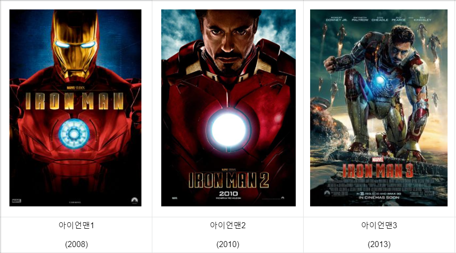

마블 코믹스의 아이언맨 시리즈를 영화화한 작품. 1편과 2편의 감독은 존 패브로, 3편의 감독은 셰인 블랙. 1편은 2008년, 2편은 2010년 개봉했다. 그리고 3편의 촬영이 2012년 6월 시작되었으며, 개봉은 2013년 북아메리카에서 5월 3일.
기존의 슈퍼 히어로물은 원작 재현에 신경을 많이 쓰는 것에 비해 아이언맨 트릴로지는 새롭게 각색한 부분들이 상당히 많다. 오베디아 스탠은 원작에선 토니 나이 또래의 경쟁자였으며, 저스틴 해머는 나이가 많고, 상당히 지략가적인 면모의 캐릭터였다. 토니가 아이언맨이 된 계기와 과정은 비슷하지만, 장소는 원작과 영화가 다르다. 특히 아이언맨 3의 경우는 원작과의 괴리가 꽤 크다. 최대 장점은 역시 주인공인 토니 스타크와 아이언맨 슈트의 매력. 아이언맨은 21세기 현재에 가장 매력적인 슈퍼히어로란 평가를 받으며, 그 이전의 슈퍼히어로들과는 전혀 다른 매력을 보여주었으며, 이로 인해 토니 스타크를 연기한 로버트 다우니 주니어는 할리우드 최고의 스타로 거듭났고 아이언맨도 이전까지는 그냥 마블 속 히어로에서 스파이더맨, 헐크, 울버린(마블 코믹스) 등과 함께 세계적으로 잘 알려진 마블의 간판 히어로 반열에 오르게 되었다.
